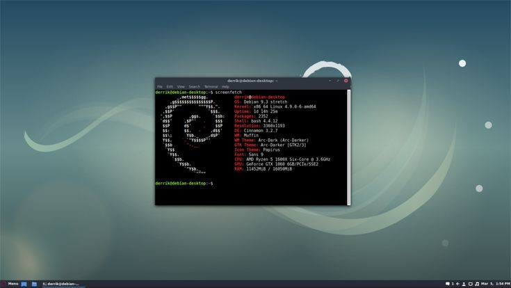

LAS DISTROS MAS POPULARES HOY EN DIA SON
EXISTEN MUCHAS DISTRIBUCIONES LAS CUALES SE VERAN LAS SIGUIENTES
UBUNTU
DEBIAN

KALI LINUX
MANJARO
LINUX MINT
ARCH LINUX
FEDORA
ESTAS DISTROS SE PUEDEN USAR MEDIANTE MAQUINAS VIRTUALES, DUAL BOOT, O TAMBIEN COMO SIMTEMAS PRINCIPALES
APRENDA UN POCO E INDAGE EN LA TERMINAL
COMANDOS BASICOS
- pwd = indica en el lugar que se encuentra
- clear = limpia la terminal
- mkdir = crea directorios
- ls = lista archivos y directorios
- cd = ingresa a directorios
- nano, cat >, touch = crea archivos de diferentes tipos
- rmdir = borra directorios
- rm = borra archivos